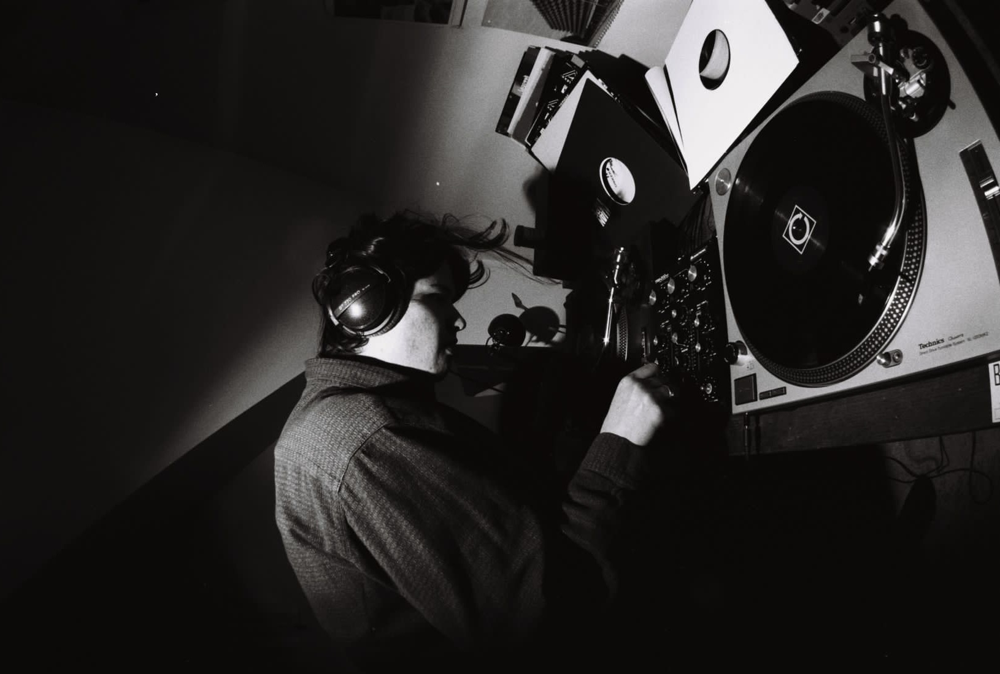

Hauptgast is the name under which I have been djing since 2019. Here is what the press has to say: "Utrecht-based DJ and producer Hauptgast, who is Finn Pietrass, dwells somewhere in the space between experimental dance and fully-fledged hypnagogia. With the singular mission of revealing the pattern under the plough, the incredibly rare D-J-Hauptgast project has now resurfaced to share a deeply personal take on the history of music."
Some places I played at:
05.01 Salon des Amateurs, Düsseldorf DE
09.06 Best Kept Secret, Tilburg NL
31.05 Delirium @ Goethebunker, Essen DE
25.05 Kabul a Go Go, Utrecht NL
25.11 KIM @ Vogelfrei, Utrecht NL
14.10 Het Complot @ Ekko, Utrecht. NL
